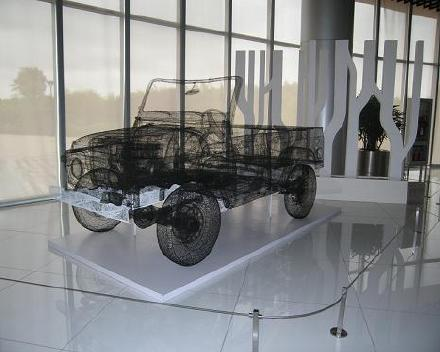
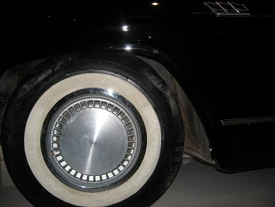
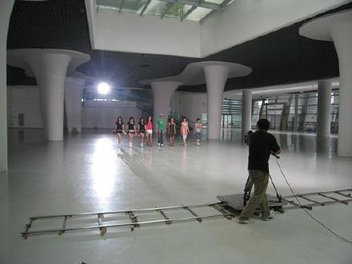

- 看到热心留言中有一位说“听你的歌感觉应该是一个女人味十足的成熟歌手，没想到只比我大一岁，从high歌搜到我，听了你的整张专辑，恨自己为什么没早点听到这么好听的音乐，从来没有喜欢过哪个歌手的一整张专辑，你是第一个，加油！喜欢你的人会越来越多，你的努力一定可以得到回报！你的新专辑我一定去买，加油加油！快点红起来！快点红起来！”感谢了，不要恨自己，现在关注我还是来得及的呢，顺便说一声，我的专辑《痒》市面上应该很难买到了，不过大家可以去韩寒的网站，我记得他那边有订购。。。
-
想和爸爸妈妈一起听听并且仔细研究一下郁可唯和江映蓉演唱我的歌，于是在土豆搜索起了<痒>，<HIGH歌>，<玫瑰>和<一个人想你>，发现首页显示出来的都是两位的相关视频，而我自己的视频却找了很久，呵呵，应该是开心还是嫉妒呢，废话当然拉是开心拉！她们分别挑选的这两首歌曲真的特别难唱，听郁可唯唱<痒>和<玫瑰玫瑰我爱你>，她音准真的控制很好，在演唱时很冷静,感觉很轻松，但是我知道要唱好这两首歌需要非常好的气息，事实证明她做到了，我喜欢她的淡定令这两首歌有了不一样的味道，还有她果然把<痒>的最后一句歌词唱了“越想越慌越想”的版本，记得推痒的单曲时侯，也不敢播“越痒越骚越痒”的版本，怕被保守的领导们封杀了就不好了
，嘿嘿！ 我妈妈很欣赏郁可唯的自然大方，另一个原因可能她特别爱<痒>这首歌吧。 - 江映蓉是我一开始就挺关注的，她表演过的舞曲令我印象比较深刻，我总觉得她长的有点像HIGH版林熙蕾，也有看她在快乐大本营里面唱了一小段<一个人想你>，很不错，她的音域挺宽的，一个人想你的副歌有一个转调，最高音是F，我的音域其实并不宽，虽然是假声，但在录音的时候还是喊了好久才做到的，这要多亏我的声乐老师对我魔鬼训练才让我领悟到一些唱高音的技巧，所以我每次唱到那儿都会思想特别集中的运用丹田气，而她居然那么轻松，嗓音条件果然很好。江映蓉版的<HIGH歌>也挺叫人佩服的，我专辑录制的第一首歌，<HIGH歌>是我的开始同时也是我的噩梦，因为那几个到现在还数不清楚的蒙古风转音真的会叫人失去信心，如果唱好了是一个很大的飞跃，之前超级星光大道的康祯庭唱的<HIGH歌>算是满完整的了，不过转音还是稍有些遗憾，江映蓉把<HIGH歌>重新编舞了一下，以边跳边的形势诠释<HIGH歌>，唱转音发声是YI....跳舞时不小心就会变成绵羊音，还是开心的绵羊，大家可以边唱YI边跳舞体验一下。江映蓉这部分处理的不错。要做到淋漓尽致估计只有<HIGH歌>创始人我的偶像常石磊。
- 再一次感谢郁可唯和江映蓉在快乐女生中唱了我的歌，让更多的人知道我，支持我，鼓励我,也感谢湖南卫视这么优秀的平台。有一位热心者留言说"为什么我不去参加快女或者超女,不然2年前早就红了,还有建议我去参加湖南卫视的节节高升,是不是怕得罪上海的番茄台?".呵呵,现在想想是蛮像番茄的.我很欣赏这些选秀选手的勇敢和执着,也很羡慕她们有如此好的平台给她们实现梦想,如果有机会我也很愿意和她们站在同一个舞台上唱歌.我想这就是上天的安排吧,冯老师对于我的音乐上坚持的近乎偏执狂,她宁肯我失去演出的机会也不愿意我人云亦云的唱歌,冯老师是上海音乐学院科班出身,对音乐的品质非常的严苛.她根本就不是一个商人,也不把艺人当成一个商品,她希望在我们的身上,是有生命力的.所以,环球天韵有了让世界惊艳的萨顶顶,首位捧得BBC音乐大奖的华人.石头说在我的身上看到的音乐的灵感,而他何尝不是我的幸运之神,每次听他唱歌我鸡皮疙瘩都掉一地.而孟楠将自己的才气,毫无保留的嫁接到我的身上,她就像是默默的为我做嫁衣的闺蜜.如果没有我的公司环球天韵,我想我现在可能还只是一个连说话都会脸红的女生....上天对我很好,不断的给我机会,只是我总给自己找借口说没关系慢慢来,但是这次不同了,新专辑已经提上日程,我马上要去台湾完成专辑里面剩余的歌曲,比我还着急的人们,请你们放心吧!
- 我又花了两个小时写到这里,功课还没做完怎么办?妈妈又跑来说:你怎么还在写啊?我总是这样的后知后觉.先听我的歌声会感觉成熟女人,其实我有时侯也爱发花痴,昨天的<青春进行时>应该有人看吧,我对着井宝发花痴,还有为了他打架形象尽毁那段纯属剧情需要,本人对他没有杂念.
- 月中要录制旅游卫视的<与车共舞>,和1964年上海牌车子共舞,刚从安亭彩排回来,赶紧传几张自拍照,大家忘记我被打的形象吧...
-
师进滇《北京吉普》不锈钢着色 
- 很适合拍MV的“车子”
- 从这角度看我们轮廓很相象，大光灯
- 我觉得轮子好看

- 向五星红旗敬礼
- 保安不让我靠近我偏要靠近
- 我在哪里？

- 有点模糊